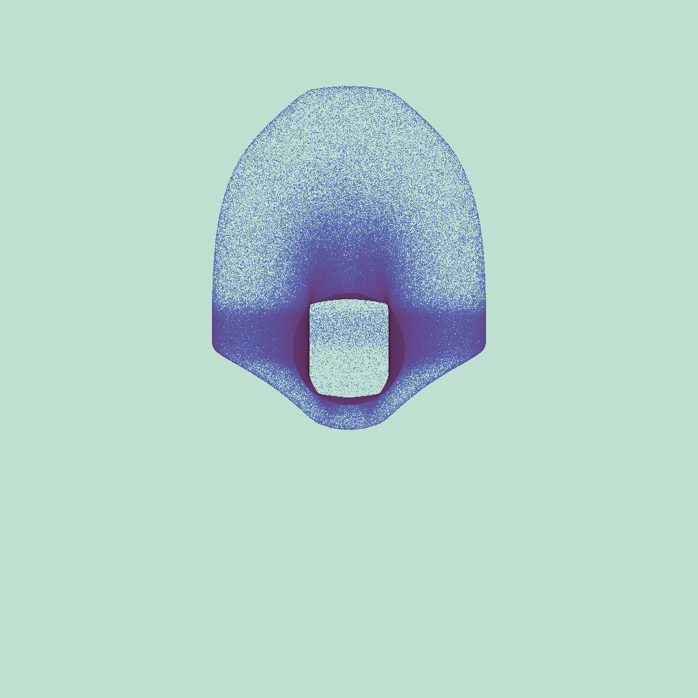
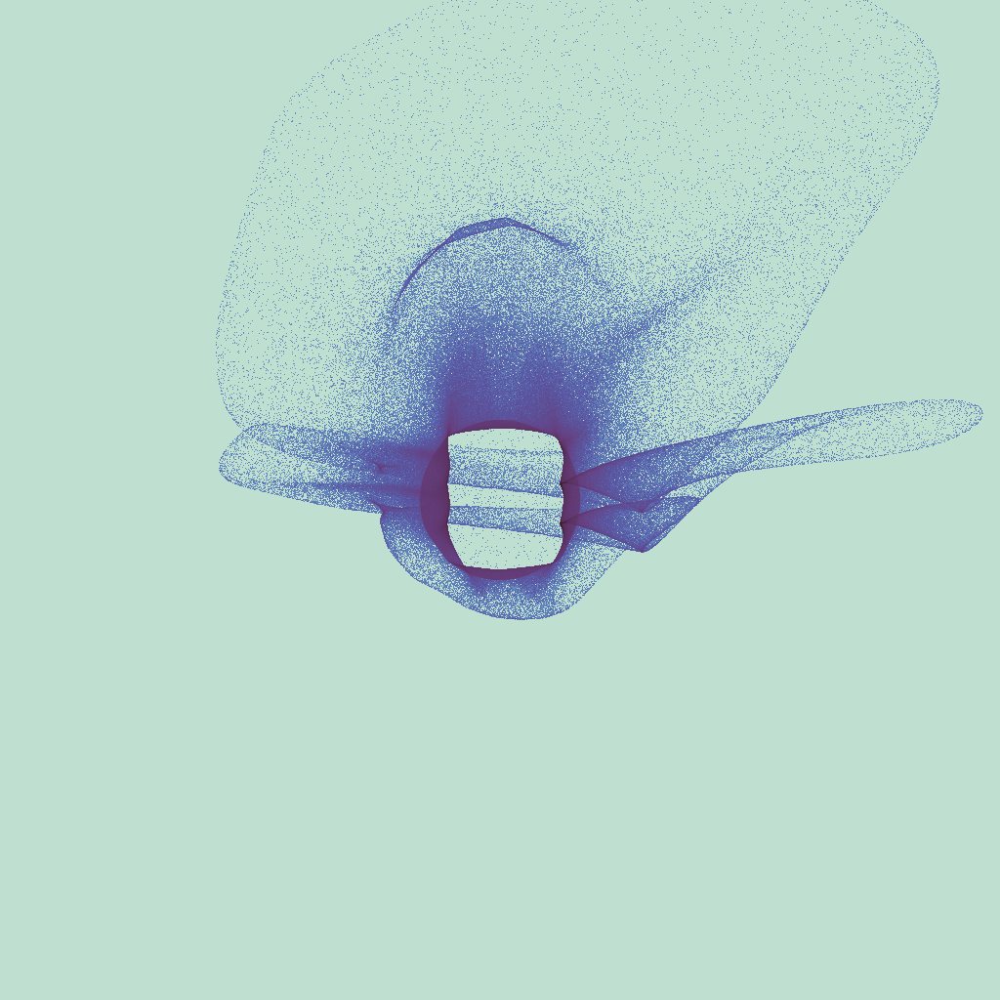
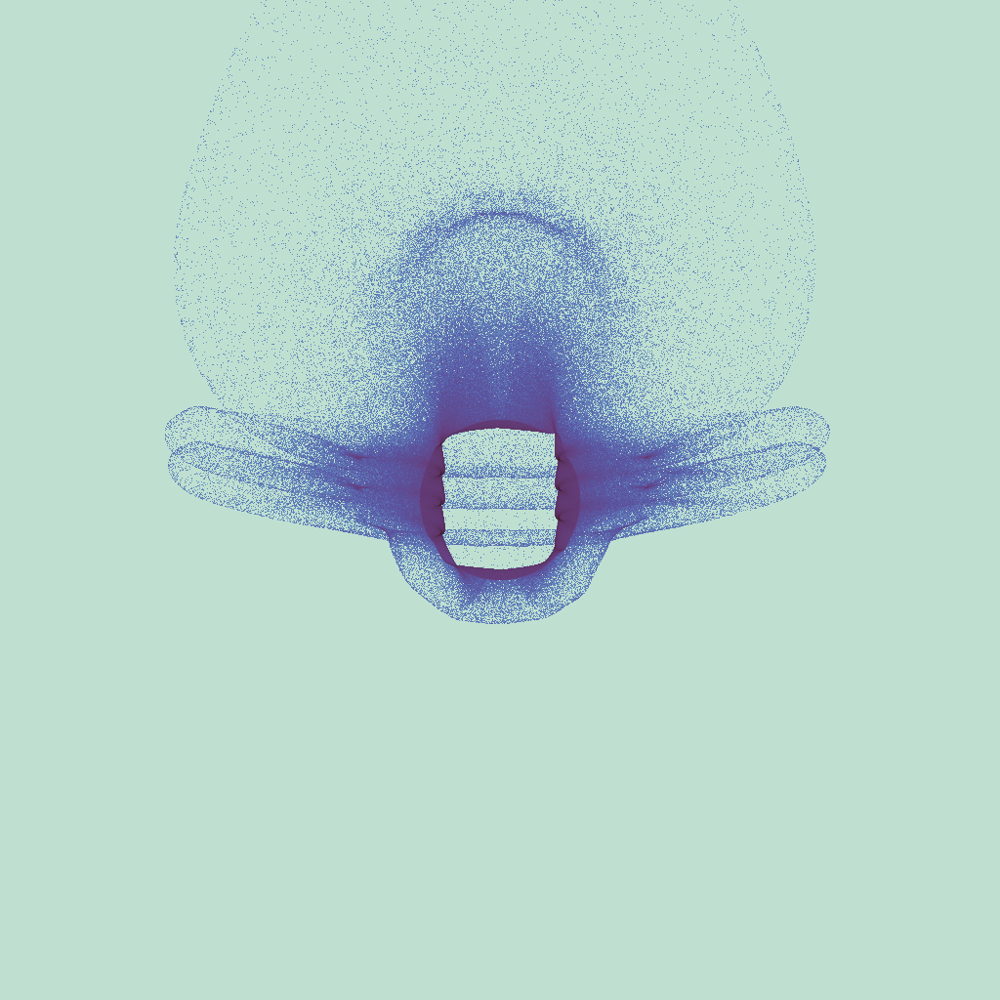

Home
GPU Proton Radiography — a forward model for laser-plasma and HEDP experiments.
prad traces synthetic proton beams through measured or simulated electromagnetic fields and produces radiographs for direct comparison with experimental RCF data. Full relativistic Boris orbit — not a paraxial approximation. 1M particles in 0.148 s on a laptop GPU — 33,000× faster than PlasmaPy in a measured 1M-particle benchmark. 25 validation tests covering EM deflection, detector geometry, adaptive timestepping, field compositing, per-hit export, and Bethe-Bloch energy loss.
-
Relativistic Boris
Particles are pushed in
u = γvmomentum space. Energy is exact at all energies — no paraxial or non-relativistic shortcuts. -
TNSA Energy Spectra
Monoenergetic, Gaussian σ spread, or exponential TNSA spectrum with configurable temperature and hard cutoff.
-
25/25 Validation Tests
EM deflection, analytic Larmor radius, E×B force balance, detector geometry, geometry invariance, field compositing, per-hit export, Bethe-Bloch ρL equivalence, and vacuum regression.
-
GPU-Accelerated
~9 B steps/s on Apple M4 · ~34 B steps/s on NVIDIA RTX 4090. 1M particles traced end-to-end in under 2 s on a laptop GPU.
-
Numerical Robustness
Timestep, particle-count, and field-grid convergence studies. Field-grid resolution identified as the dominant sensitivity. One-command figure reproduction.
-
Adaptive Timestep
Large dt in vacuum, small Larmor-constrained dt inside the field. 5–20× speedup with no change to the physics. Automatic — no configuration required.
-
Field Compositing
Superimpose any number of
.bfldgrids with independent scale factors. Overlay plasma fields, coil fields, and background fields in a single TOML deck. -
Bethe-Bloch Energy Loss
CSDA proton stopping via the relativistic Bethe-Bloch formula. Scalar density grids (
.dens) drive spatially-varying energy loss. Built-in material presets for water, plastic, Be, Al.
Performance benchmark¶
Measured at 1 million particles on the same hardware (Apple M4 laptop GPU):
| prad (adaptive dt) | PlasmaPy (CPU) | Speedup | |
|---|---|---|---|
| 1M-particle run | 0.148 s | 4,920 s | ≈ 33,000× |
prad uses a three-phase adaptive timestep: large dt in vacuum, Larmor-constrained dt inside the field. At 1M particles with fixed dt = 0.2 ps (same as PlasmaPy), prad is still 2,180× faster. Both timings are measured on the same hardware; no extrapolation.
Tested platforms¶
| Platform | GPU | Backend | Status |
|---|---|---|---|
| macOS Apple Silicon | Apple M4 | MoltenVK/Vulkan | Validation suite passing; ~9 B steps/s peak |
| Ubuntu 22.04 Linux | NVIDIA RTX 4090 | NVIDIA Vulkan 1.3.277 | Validation suite passing; ~34 B steps/s peak |
Synthetic radiographs from first principles¶
Three MHD instability geometries, computed in seconds on a laptop GPU:



Each image is a synthetic proton radiograph. The spatial structure directly encodes the path-integrated field topology — no paraxial assumptions.
30-second quickstart¶
import numpy as np
import prad
# Build a field from numpy arrays — or load directly from a .bfld file
B = np.zeros((64, 64, 64, 3), dtype=np.float32)
B[:, :, :, 2] = 5.0 # 5 T uniform Bz
field = prad.Field.from_array(
B, bounds_m=(-0.05, 0.05, -0.05, 0.05, -0.05, 0.05)
)
# Monoenergetic — 14.7 MeV (D–³He fusion protons)
result = prad.run(
field,
energy_MeV=14.7,
n_particles=200_000,
source_distance_mm=80.0,
detector_distance_mm=100.0,
)
result.show()
print(result.raw_counts.shape) # (1024, 1024) uint32
# TNSA broad spectrum — laser-plasma relevant
result_tnsa = prad.run(
field,
temperature_MeV=3.0, # dN/dE ∝ exp(−E / T)
cutoff_MeV=40.0,
n_particles=200_000,
)
result_tnsa.save("tnsa_radiograph.png")
[field]
path = "data/zpinch.bfld"
[source]
type = "parallel"
energy_MeV = 14.7
temperature_MeV = 3.0 # TNSA exponential spectrum
cutoff_mev = 40.0
n_particles = 200000
beam_radius_mm = 40.0
source_distance_mm = 80.0
[detector]
center_mm = [100.0, 0.0, 0.0]
width_mm = 500.0
height_mm = 500.0
[numerics]
dt_ps = 0.2
max_steps = 25000
Why this tool?¶
Speed that changes what's practical. In a measured 1M-particle benchmark on the same hardware, prad completes in 0.148 s (adaptive timestep) versus 4,920 s for PlasmaPy — a 33,000× speedup at the particle count scientists actually use. With a fixed timestep matching PlasmaPy's dt = 0.2 ps, prad is still 2,180× faster. Both results are measured; no extrapolation. That gap makes workflows practical that previously required paraxial shortcuts: broad parameter sweeps, interactive geometry design, comparison of field topologies, and large synthetic dataset generation for ML inverse solvers.
No approximations. Every fast alternative uses the paraxial approximation — integrating the field kick along an unperturbed straight-line trajectory. In the strong-field regimes common in pulsed-power and high-intensity laser experiments, it fails badly. At just 20% of the kink instability field amplitude the paraxial model produces streaks spanning the entire detector; the full-orbit result shows the correct helical kink signature. prad traces the complete relativistic orbit in all cases.
A complete research environment. prad ships with a Python API (pip install prad,
numpy arrays in and out), a parameter sweep engine, a GUI for interactive deck editing,
TNSA exponential spectrum sampling, and self-documenting run directories with SHA-256 field
hashes for exact reproducibility. You can go from a numpy field array to a synthetic
radiograph with three lines of Python, or run a multi-point energy sweep from the command line
in one command. Bethe-Bloch energy loss, field compositing, and adaptive timestepping are
available out of the box — no extra dependencies.
Get started Python API Validation
Built by Jonas Dolezal.